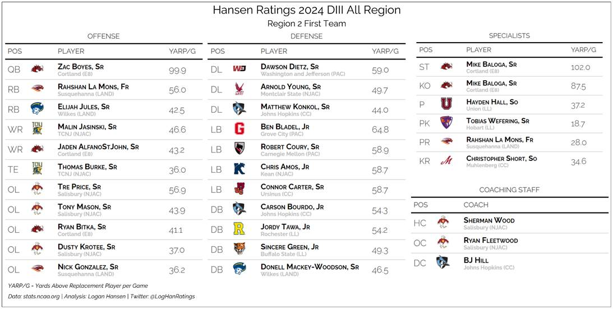
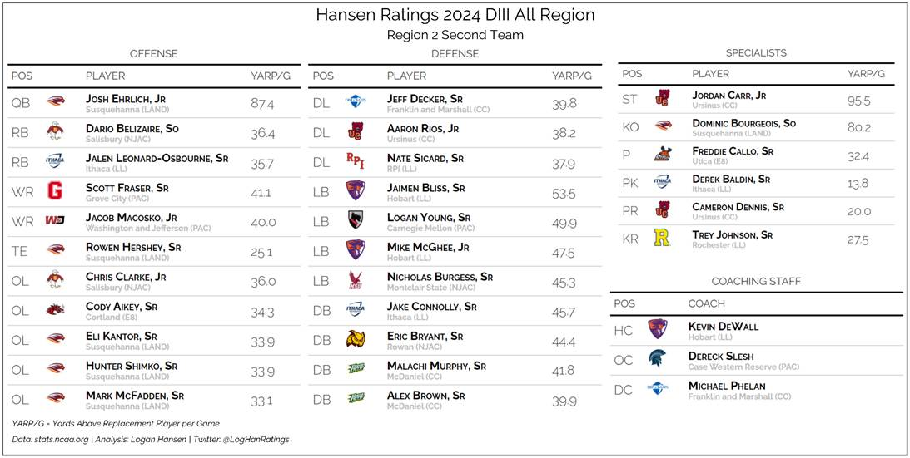
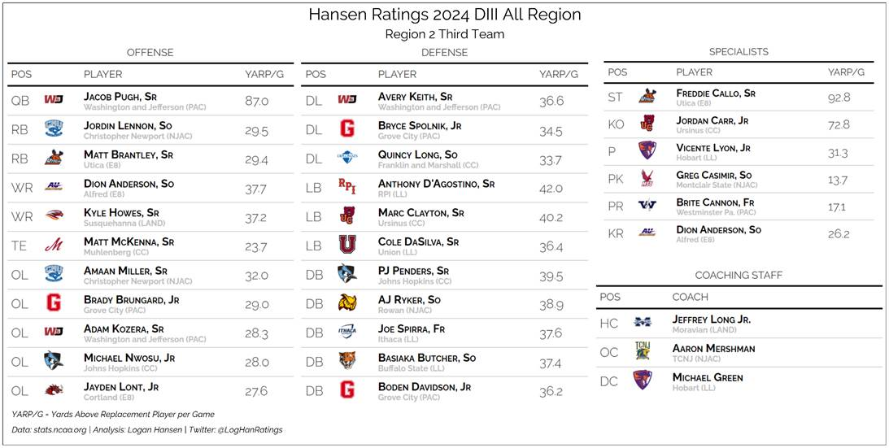

Region 2 Award Winners
- Offensive MVP
- Zac Boyes, QB, Cortland*
- Defensive MVP
- Ben Bladel, LB, Grove City*
- Special Teams MVP
- Mike Baloga, K/P, Cortland
- Coach of the Year
- Sherman Wood, Salisbury
- Off. Player of the Year
- Rahshan LaMons, RB, Susquehanna
- Off. Lineman of the Year
- Tre Price, OL, Salisbury
- Off. Coordinator of the Year
- Ryan Fleetwood, Salisbury
- Def. Lineman of the Year
- Dawson Dietz, DL, Washington and Jefferson
- Def. Back of the Year
- Carson Bourdo, DB, Johns Hopkins
- Def. Coordinator of the Year
- BJ Hill, Johns Hopkins


